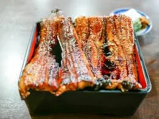

みんな！やっほー！くまさんだよ！
いよいよ社員旅行が近づいてきたね！
山には社員旅行は無いから、楽しみだよ！
ここでは、社員旅行の過ごし方について解説するからよーく聞いてね！
（くまさんは行けないんだけどねw
社内政治は得意だけど、社員旅行はまだ自信がないんだ、、。）
忙しい人はここだけ読めばOKだよ！（僕もいきたいなー）
特に必須はありません、まったり過ごしましょう！
しっかり遊びたい人向けにはアクティビティを用意しています。以下の日程表を見ていきたいところに応募しましょう！
※任意オプションの欄を確認してね！
基本、いつきていつ帰ってもいいよ！
1日目で帰るおすすめ：
佐原→東京（19:07発）
2日目で帰るおすすめ：
佐原→東京（17:42発 / 19:31着）
すぐに帰りたくない人：
好きなだけ飲んで帰ろう！さらしー！🍻
緊急連絡先：なっちゃん
オンにすると、集合時間やイベント前にスマホに通知が届くよ！
遅刻だけ気をつければよさそうだね！
ここまでで必須のお知らせはおしまいだよ！次からは時間があるときに読んでみてね！
くまさんは暇だから解説を続けるよ！
当日はどんなふうに過ごせばいいのかな？くまさん、教えて！
おっけー！日程表を公開するよ！
ただ、大切なことは「これは推奨日程」であって、必須の予定では無いんだ！
基本は気ままに過ごしてくれてOKだよ！
「こう過ごすと楽しいかもね！」というオプションは用意しているから、興味ある人は”手上げ”してね！
東京駅 10:55発 → 佐原 12:28着
駅から市街地まで徒歩15分
🚶♂️ 駅からレストランまで移動(徒歩10分)
「いなえ」を拠点として自由行動 (お部屋借りれそう)
15:00から17:15までの間に、各自でホテル (KAGURA) へチェックインしてください。
| 部屋名・部屋番号 | 部屋割 |
|---|---|
| YATA グランド103号室 ベッド2台、エキストラ＋１ |
まい、 まい息子 |
| AOI スイート201号室 ベッド2台、エキストラ＋１or布団＋２ |
かね |
| SEIGAKU プレミア301号室 ベッド4台 |
さらしー、 だいち |
| SEIGAKU スイート302号室 ベッド2台、エキストラ＋１ |
つよ、 つよ息子 |
| GOKO グランド401号室 ベッド2台、布団＋１ |
よっしー |
| GOKO グランド402号室 ベッド2台、布団＋１ |
じゃみ |
| GOKO プレミア404号室 ベッド2台、布団＋１ |
よね、らい |
| SHIPPOUデラックス501号室 ベッド3台：3名利用で計算 |
ひろや、 なっちゃん |
| SHIPPOU デラックス502号室 ベッド3台：3名利用で計算 |
うっちー、 みー |
ホテルで夕食
立澤さんも交えて、全員で楽しい夕食の時間を過ごしましょう！絶対来てね！
せっかく行くからには、今回の旅行についてもっと色々知りたいなー
そうだね！山には無いものがいっぱいだから気になるよね！
ここに資料を集めたから、よかったらみてみてね！

関東で初めて「重要伝統的建造物群保存地区」に選定。江戸の商家がそのまま残るだけでなく、現在も家業を引き継いで営業を続けている店が多く、活きた歴史を感じられるのが最大の特徴です。
日本地図を作った偉人、伊能忠敬が17歳から50歳までの約30年間を佐原で過ごしました。彼の旧宅や、国宝に指定された貴重な資料を展示する記念館は必見です。
かつて利根川の水運を活かした酒や醤油の醸造が盛んでした。現在も歴史ある酒蔵（東薫酒造、馬場本店酒造）や醤油蔵が残り、発酵食品を楽しめます。
街歩きで立澤さんが紹介してくれそう！